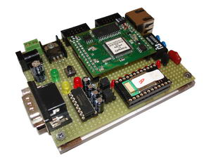

Cíle projektu
Cílem projektu je vytvořit "obousměrný síťový most" na mikrochipu AVR Atmega 128 (Charon 2 modul) s operačním systému NutOS. Jedná se o nehomogení most, kde na jedná straně je Ethernet a na druhé straně Bluetooth.
Přípravek
Modul Charon 2 je zasazen do přípravku vyvinutý v HWlabu, který má síťový konektor RJ45 a Bluetooth modul.
 |
 |